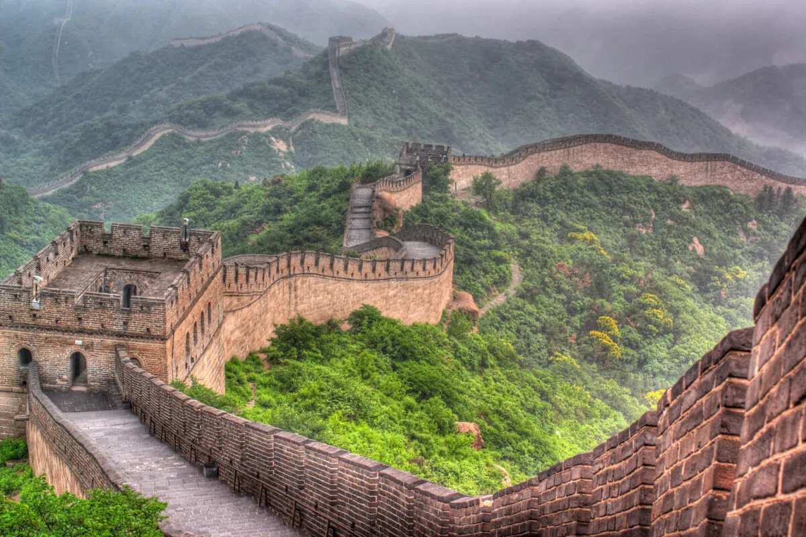

A Muralha da China ou Grande Muralha é uma construção que tem 21.196 quilômetros de comprimento. Tem a altura de 8 metros e mede 4 metros de largura. Ela começa na província de Gansu e termina no Golfo de Bohai. Ela é considerada uma das Sete Maravilhas do Mundo Moderno e, por esse motivo, é uma das principais atrações turísticas da China, recebendo mais de 4 milhões de visitas por ano.